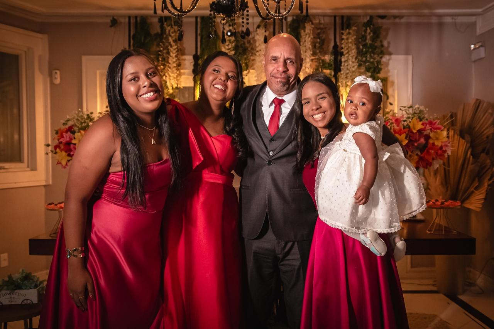

Antes de falar sobre o que faço, preciso falar sobre o que me formou.
Cresci em Mesquita, Rio de Janeiro, em um lar simples — mas rico. Rico de histórias, de visitas quase diárias, de comida bem-feita e de uma fé silenciosa que minha mãe, Creuza, plantava todo dia com a mesma frase: "Fique tranquila, tudo vai ficar bem, pois Deus cuida de tudo."
Meu pai Manoel era taxista e contador de histórias. Conduzia qualquer roda de conversa com presença e alegria. Minha mãe era discreta, paciente, firme — e cheia de uma fé que não dependia de resolução para ser real. Eles me ensinaram, sem saber, o que hoje ensino: que hospitalidade é teologia.
Me converti aos 11 anos na PIB de Mesquita. Me batizei aos 12. Tive o privilégio de uma adolescência saudável na presença de Deus — e guardo até hoje a certeza de que Ele cuida de mim desde o início.
Ainda na adolescência, sonhei que o Senhor me levava à casa do meu namorado e me revelava o nome: André. Guardei esse nome no coração.
No dia 1º de maio de 1999, minha amiga Márcia Flauzino me convidou para o aniversário do primo dela. Será que é o meu André?
Era, sim.
Noivamos em 14 de novembro daquele mesmo ano. Nos casamos em 21 de setembro de 2002. Dois meses depois do casamento — André ainda era católico — iniciamos o culto doméstico. Eu carregava desde a adolescência o anseio de replicar o que via na casa do tio Valdir, com sua tia Lizete, violão e os primos cantando juntos. Queria aquilo para a minha própria família. Para a glória de Deus, aconteceu.
O culto doméstico foi o alicerce do nosso casamento. André foi batizado em 2017 — quinze anos depois de começarmos a semear o Evangelho juntos.
Em 9 de fevereiro de 2007, nasceu Ana Luísa — alegria, fofura e energia. Em 9 de março de 2010, veio Antonela, com sua luz e graciosidade. Deus me abençoou com uma família que alegra o coração.
Mas como toda família real, passamos também pelas sombras.
Em 17 de julho de 2006, perdi meu pai. Em 31 de janeiro de 2021, minha amada mãe. Em 27 de fevereiro de 2021 — menos de um mês depois — meu sogro Joaquim também foi para o Senhor. Três lutos em um mesmo período de vida, além da perda do Bob, nosso cachorro de anos.
E havia ainda a retinose pigmentar — doença degenerativa e incurável na retina do André, que pode levá-lo à cegueira total. Em 2021 houve um agravamento. Choramos, nos entristecemos, oramos, conversamos com os familiares — e entregamos ao Senhor.
Essa entrega não é resignação. É a resposta de quem aprendeu que a soberania de Deus não depende da resolução do problema para ser real.
De maio a agosto de 2024, passei meses pregando sobre a vida de Davi — sobre o amor e a dor de um pai em seus relacionamentos e conflitos com os filhos; o que levou a uma reflexão profunda sobre disciplina e acolhimento. Ao mesmo tempo, tratava Ana Luísa de uma anemia com ferro e ácido fólico.
Era Deus preparando meu coração para o que estava por vir. E eu não sabia.
Ana Luísa, então com 17 anos, estava grávida.
Ouvi muitas vozes. Questionamentos sobre o futuro dela. Sobre como aquilo poderia ter acontecido na minha família. Cada dia trazia uma dúvida nova.
Mas diante de grandes mudanças, a resposta certa é mergulhar na Palavra, reconhecer a própria fragilidade e agir um passo de cada vez. Suspendi o grupo de oração. Iniciei semanas de comunhão intensa com Ana Luísa e a missionária Marilene — oração, conversa sincera, estudo da Palavra.
E escolhi o acolhimento.
O mesmo amor que Deus tem por mim quando erro, ofereci à minha filha. Enquanto alguns se escandalizavam, eu aprendi na prática o que pregava: que o Deus Bondoso sonda, acolhe e restaura.
Em 3 de janeiro de 2025, nasceu minha neta Aurora — "aquela que brilha como o ouro", amanhecer.
Ela nasceu no dia em que o pai completou 18 anos. Na data de validade do documento dele — para que ela pudesse ser registrada no dia do seu nascimento. Um dia a mais, e o registro não seria possível.
Em tudo vi o cuidado de Deus.
Iniciei em 2014, como uma das líderes do grupo de oração de mulheres na Igreja Batista Betel de Mesquita. A partir de 2019, o trabalho passou a acontecer em encontros nos lares e em minha casa; o pastor local autorizou as reuniões, mas não havia vínculo institucional. Participavam mulheres da minha igreja e de outras denominações. Foi ali que nasceu, de forma concreta, uma dependência da graça que nunca mais me abandonou.
Em 2025, publiquei meu primeiro texto autoral no livro coletivo Improváveis + Resistentes — onde escrevo sobre o Deus que sonda, acolhe e restaura. Também publiquei o Devocional Deus e eu, lançado em novembro de 2025 — um guia espiritual diário para fortalecer o culto doméstico e a caminhada pessoal com Deus.
Sou analista de perfil comportamental e pós-graduanda em Neurociências. Aprendi, ao longo dos anos, que fé e autoconhecimento não competem — se potencializam. Quando você entende como sua mente funciona, entende melhor por que Deus nos criou assim. E quando descansa na soberania Dele, a ciência do comportamento deixa de ser esforço e vira libertação.

Dois caminhos, dependendo de onde você está agora.